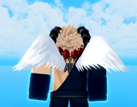

Angel V1-V2\Янгол V1-V2
Angel V3\Янгол V3
V1-Збільшення висоти стрибків. Користувач може використовувати Повітряний стрибок незалежно від того, куплений він у Вчителя Навичок чи ні.
V2-Перший Повітряний стрибок стає вищим, ніж інші. Витрати енергії на використання Повітряного стрибка зменшено на 20%. Додатковий Повітряний Стрибок .
V3-Відкривається навичка "Небесна Кров". При активації: Підвищення захисту на 15%. Збільшення швидкості відновлення енергії на 100%. Збільшення швидкості відновлення HP на 200%. Кулдаун 20 секунд. Час дії 6,5 секунди.